Močna, Slovenske gorice
Gostilna Šiker
Ob nekdanji furmanski cesti med Radgono in Mariborom od leta 1870. Danes gostilno vodi šesta generacija družine, ki živi s tradicijo, letnimi časi in sezonsko kulinariko.
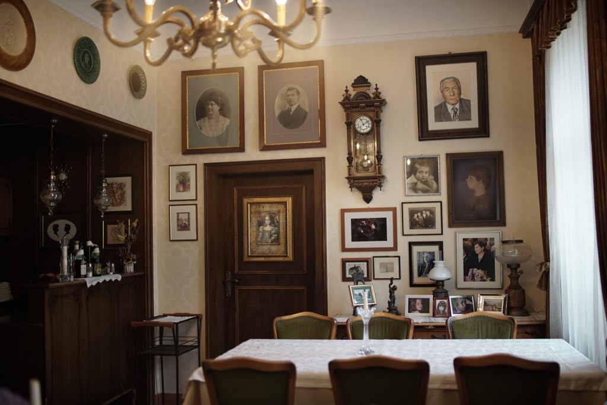
Od leta 1870
Šest generacij, ena hiša
Vse se je pričelo leta 1870, ko sta Mihael in Ana Schiker ob furmanski cesti postavila gostilno. V hlevu prek ceste, kjer je danes Kmečki muzej, si je živina odpočila, furmani pa so se odžejali z žganjem, jabolčnikom, vinom in studenčnico. K pijači je kmalu sodil domači kruh, meso, klobase in zaseka.
Hiša je zunaj še vedno kmečka in starožitna, znotraj pa na diskreten način sodobna. Gostje sedijo v jedilnicah, v posebni družinski sobi, med sodi v 200 let stari kleti ali na letnem vrtu.
- Mihael in Ana Schiker1870, furmanska gostilna
- Alojzija in Jožef Šikerkonec 19. stoletja
- Alojz in Felicita Šikerdo druge svetovne vojne
- Jože in Silva Šikertemelj gostilne, kakor jo poznamo danes; Jožetova strast je bilo vino
- Breda in Silvoprenova notranjosti, vinska klet, Kmečki muzej, otroško igrišče
- Natašašesta generacija, Hotel Šiker od konca leta 2011
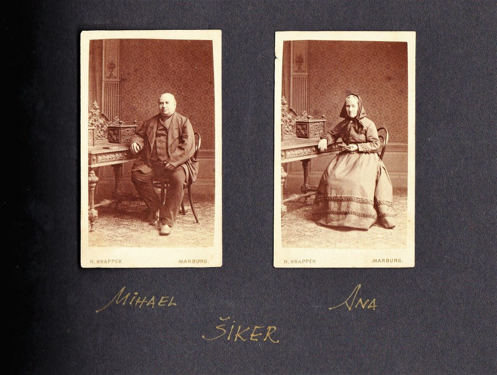
Jaz sem Nataša in sem šesta generacija, gostilno Šiker imam v krvi. Trudim se in načrtujem, kako bi gostilno Šiker ohranjala zvesto tradiciji in poskrbela za njeno vraščenost v sodobni čas, okuse in potrebe naših gostov.
Nataša Cotar, Šikerjeva NatašaKulinarika
Tradicionalno, sezonsko, lokalno
Nekatere jedi so res tradicionalne, vendar v sozvočju s časom. Z menjavo letnih časov pridejo na krožnike sezonske gobe, kostanj, dobrote v času kolin, čemaž in šparglji, cvetoča akacija, češnje in gozdni sadeži, potice ali krofi.


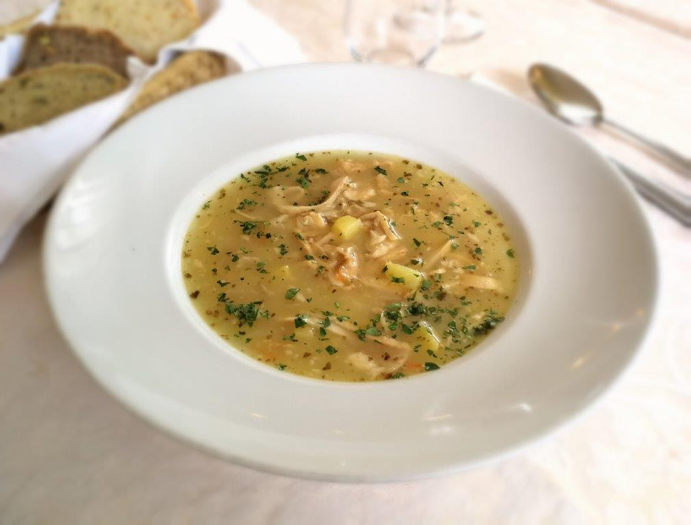
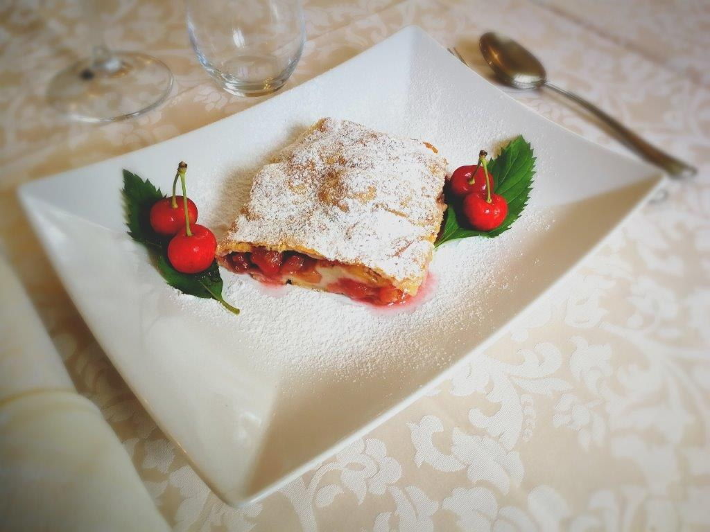
Gault&Millau 2026: Chef's Restaurant. Kuhinja: Home cooking | Local | Traditional.
Vir: si.gaultmillau.com, vpis Gostilna Šiker, ocena 2026.
Hišna kraljica
Šarlota
Šarlota je hišna kraljica gostilne, ki jo po receptu babice Brede pripravljajo že več kot petdeset let. Breda je pri svojih petnajstih letih kot dijakinja naredila svojo prvo »našo« šarloto.
Majhna, velika ali kot torta, vedno razveseljuje srca in brbončice. Lahko je tudi sladko darilo za najdražje, ki vas čakajo doma. Dedek Jože ji je za družbo izbral rumeni muškat.
Naročilo šarlote: 02 720 69 21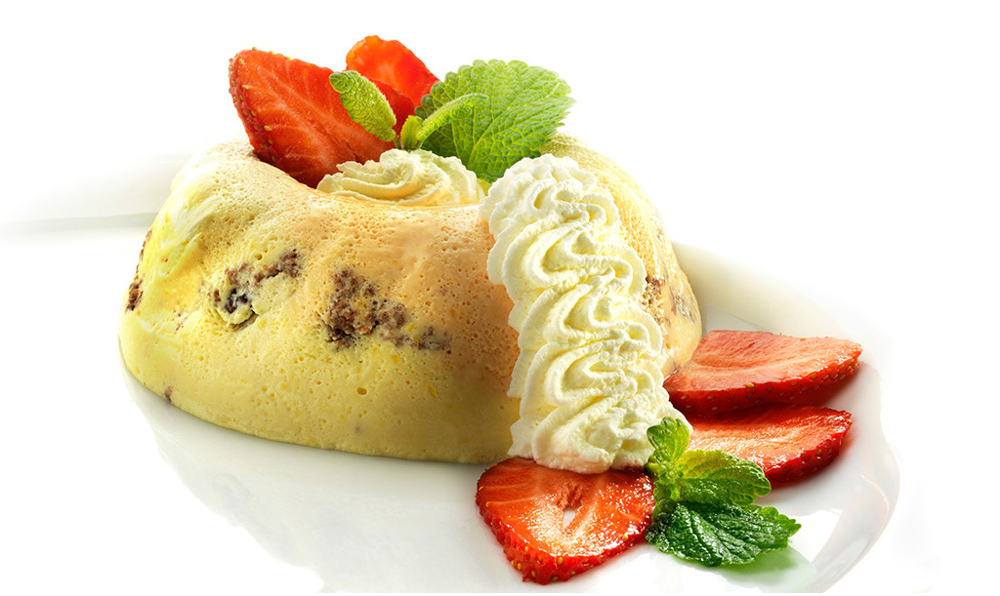
Doživetja
Klet, muzej, praznovanja
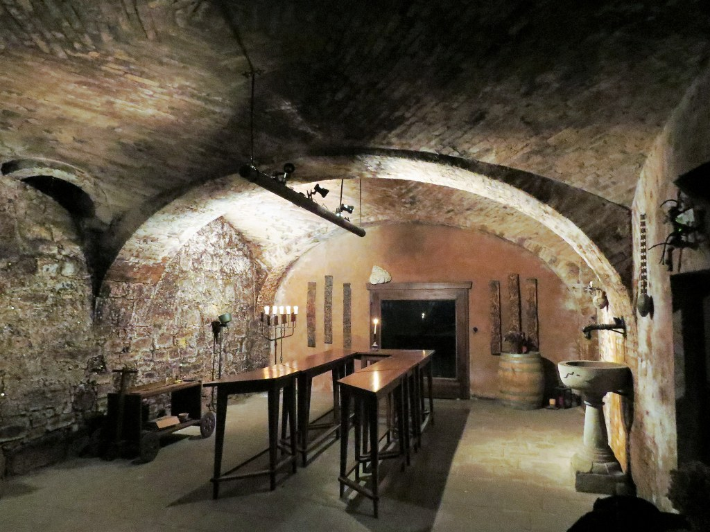
Vinska klet
Pod dvesto let starimi oboki: aperitiv, po predhodni najavi pokušnje vin lokalnih vinarjev. V »kulturnem prostoru« kleti založbe predstavljajo novitete, pisatelji knjige, igralci gledališke igre.
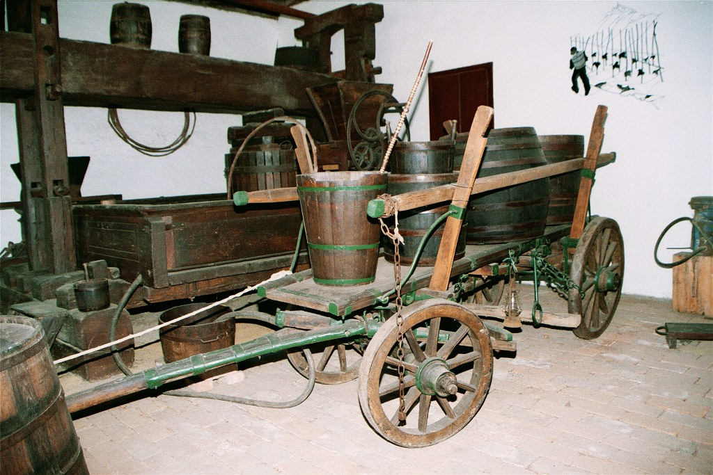
Kmečki muzej
Prek ceste, v nekdanjem hlevu: več kot petsto eksponatov iz sadjarstva, vinogradništva, poljedelstva, bivanjske kulture, kolarstva, sodarstva in tesarstva. Voden ogled po predhodni najavi.
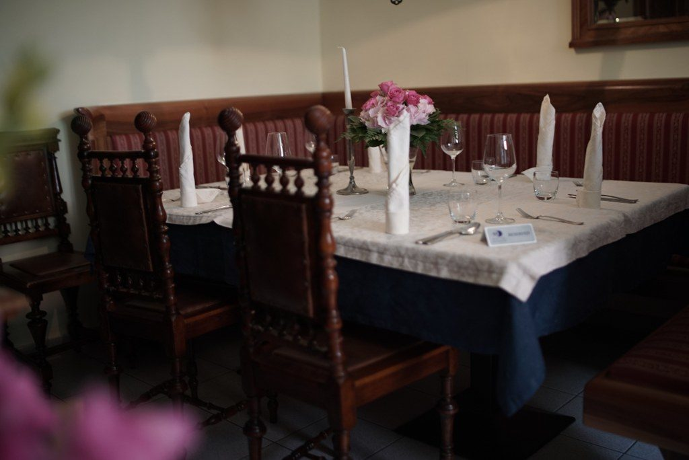
Skupine in poslovna kosila
Krsti, poroke, rojstni dnevi, obhajila, birme in obletnice mature. Za poslovna kosila posebna domača Šikerjeva soba, v kateri vlada mir.
Sto korakov od gostilne
Hotel Šiker ob jezeru Pristava
Odprt konec leta 2011, umeščen v naravo ob jezeru Pristava, deset minut vožnje od Maribora. Vseh deset sob je individualno opremljenih, večina s pogledom na jezero. Sobe imajo talno in stensko ogrevanje in hlajenje, zato klimatske naprave ne motijo.
- Zajtrk vključen
- Balkon ali terasa
- Wi-Fi
- Minibar, sef, sušilec
- Uporaba koles in igralnice
- Parkirišče
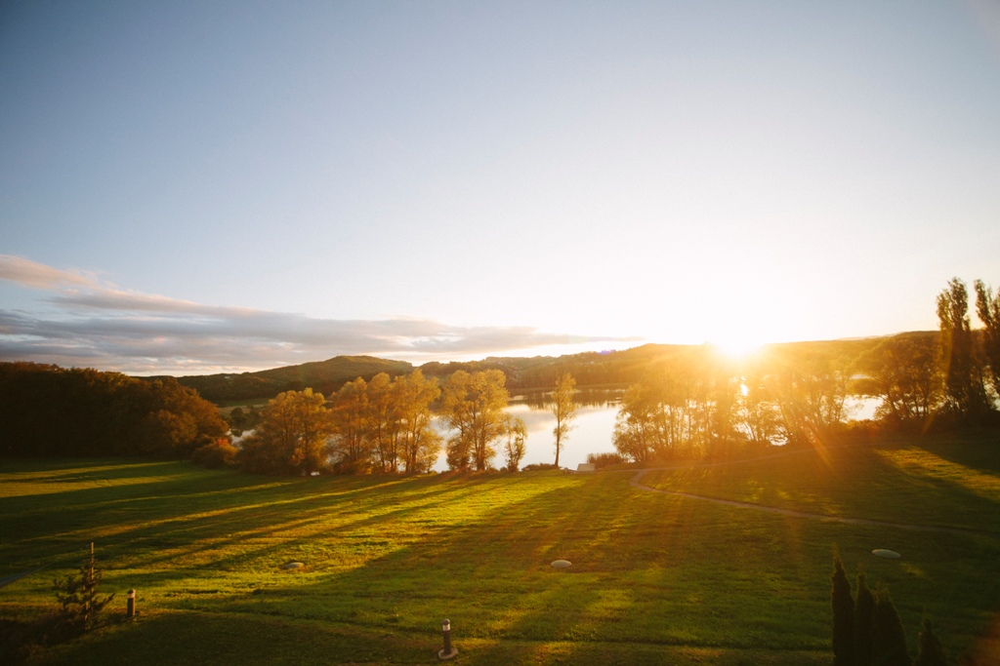
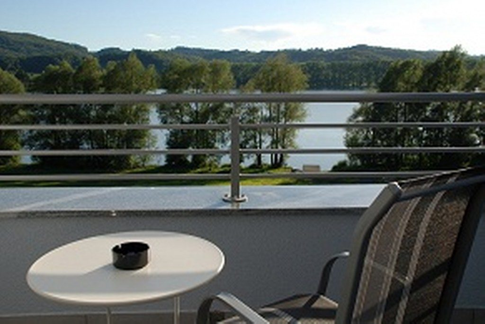

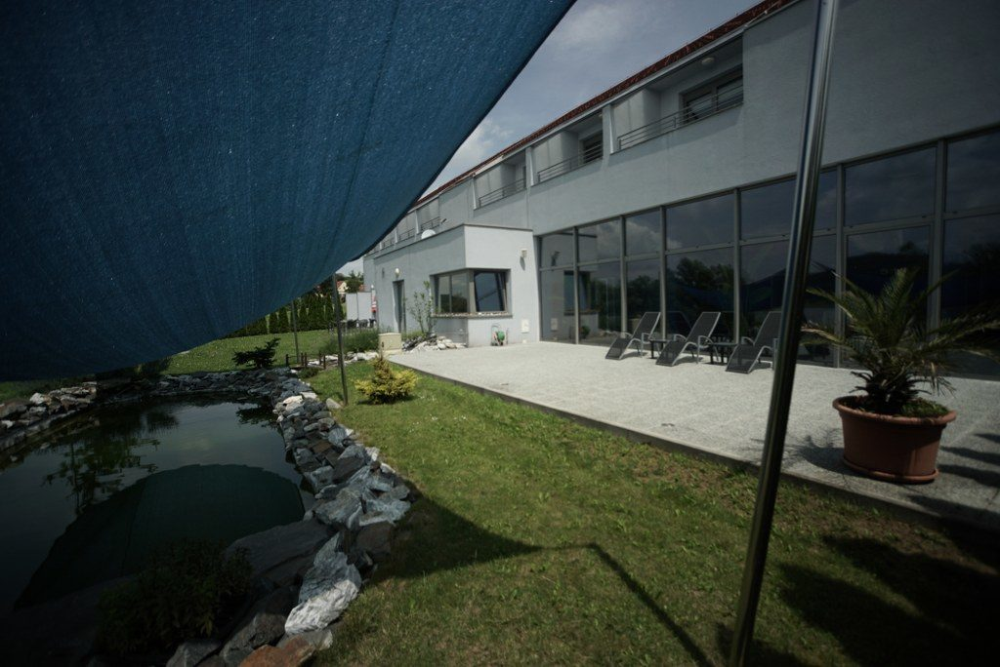
Paketa »Čudovit dan pri Šikerjih« in »Ustavite čas pri Šikerjih« združujeta nočitve z zajtrkom in večerjo v gostilni. Aktualno vsebino in cene sporočimo ob povpraševanju.
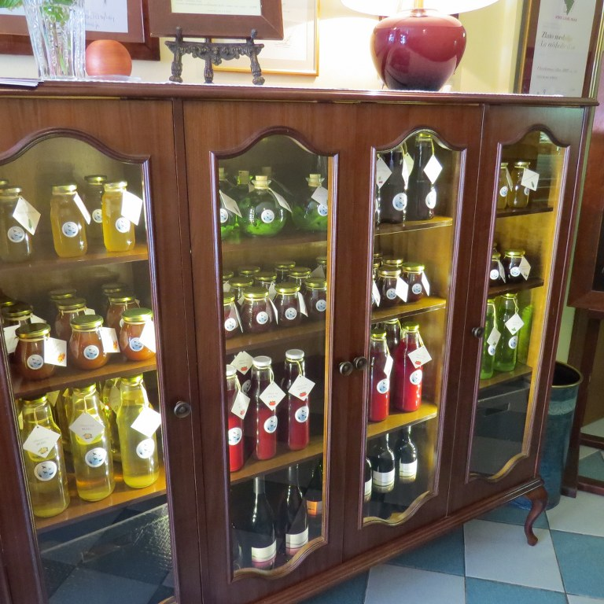
Darilni program
Domače dobrote in darilni bon
Po receptih prednikov babica Breda poleg šarlote pripravlja marmelade iz borovnic, jagod, robid in jurk, smrekove vršičke, sadje v žganju ter sokove iz mete, bezga in malin.
Darilni bon podari kulinariko in uro ali več druženja pri Šikerju; zasnovan je kot »kulinarična škatlica«, ne le kos papirja.
Kontakt
Rezervacije in informacije
Rezervacijo tri dni ali manj pred prihodom sprejemajo samo po telefonu. Rezervacija velja, ko jo gostilna potrdi.
Gostilna Šiker
- Sreda do sobota11.00 do 21.00
- Nedelja in prazniki11.00 do 17.00
- Ponedeljek in torekzaprto
Kuhinja se zapre uro pred zaprtjem. Zimski delovni čas (1. 1. do 15. 3.): sreda do sobota 11.00 do 19.00. Urnik po siker.si, preverjen 21. 11. 2026.
Hotel Šiker
- Recepcija, vsak dan5.00 do 15.00
- Prijavaod 15. ure
- Odjavado 11. ure
V primeru odsotnosti z recepcije pokličite z domofonom na vhodu.